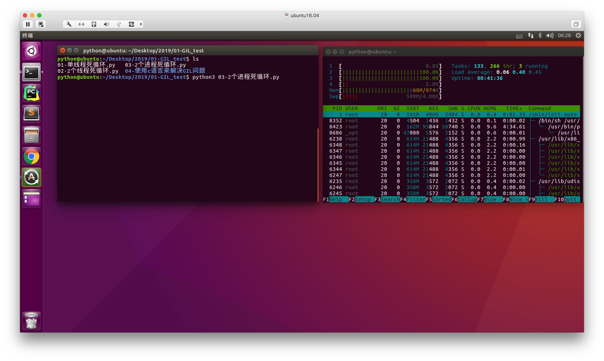
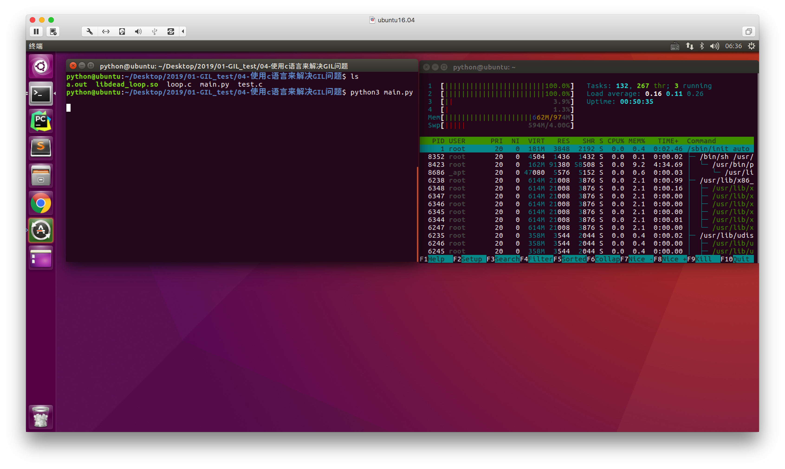

GIL（全局解释器锁）
1. GIL面试题如下
描述Python GIL的概念， 以及它对python多线程的影响？编写一个多线程抓取网页的程序，并阐明多线程抓取程序是否可比单线程性能有提升，并解释原因。
Guido的声明：http://www.artima.com/forums/flat.jsp?forum=106&thread=214235
he language doesn't require the GIL -- it's only the CPython virtual machine that has historically been unable to shed it.
参考答案:
- Python语言和GIL没有半毛钱关系。仅仅是由于历史原因在Cpython虚拟机(解释器)，难以移除GIL。
- GIL：全局解释器锁。每个线程在执行的过程都需要先获取GIL，保证同一时刻只有一个线程可以执行代码。
- 线程释放GIL锁的情况： 在IO操作等可能会引起阻塞的system call之前,可以暂时释放GIL,但在执行完毕后,必须重新获取GIL Python 3.x使用计时器（执行时间达到阈值后，当前线程释放GIL）或Python 2.x，tickets计数达到100
- Python使用多进程是可以利用多核的CPU资源的。
- 多线程爬取比单线程性能有提升，因为遇到IO阻塞会自动释放GIL锁
2. 验证GIL问题
2.1 单任务（单线程）
# 主线程死循环，占满cpu
while True:
pass
运行效果：
说明：
当一个单任务程序快速执行无限循环的代码时，通过htop命令看到一个cpu核被沾满
2.2 多任务（多线程）
import threading
# 子线程死循环
def test():
while True:
pass
t1 = threading.Thread(target=test)
t1.start()
# 主线程死循环
while True:
pass
运行效果：
说明：
通过上面的结果看出，虽然程序已经是2个线程的多任务，但是htop看到的结果是2个cpu核各占50%，其实就是一共加在一起也就100%，这就说明虽然是多任务，但依然是仅仅占用了1个CPU核，省下的空闲而已
2.3 多任务（多进程）
import multiprocessing
def deadLoop():
while True:
pass
# 子进程死循环
p1 = multiprocessing.Process(target=deadLoop)
p1.start()
# 主进程死循环
while True:
pass
运行效果：

说明：
当使用多进程来实现多任务的时候，是真的多任务，即每个任务各占1个CPU核（当然了任务数是在小于cpu核心数的前提下），实现了并行
3. 分析问题
为什么会出现多线程执行时是假的多任务呢？这其实就是本文最开始提到的，是因为Python的历史原因导致的，用C语言实现的Python解释器有这个问题，从而Python默认的C语言解释器执行Python多任务代码时，如果是进程实现的是真的多任务，而线程实际上假的多任务，这个问题就称为GIL
4. 解决GIL问题
4.1 在执行代码时调用其他语言
4.1.1 编写loop.c文件
void DeadLoop()
{
while(1)
{
;
}
}
4.1.2制作.so文件
在Linux终端中执行，会生成一个.so动态库文件
gcc -shared -o libdead_loop.so loop.c
4.1.3 编写main.py文件导入.so文件
from ctypes import *
from threading import Thread
# 加载动态库
lib = cdll.LoadLibrary("./libdead_loop.so")
# 创建一个子线程，让其执行ｃ语言编写的函数，此函数是一个死循环
t = Thread(target=lib.DeadLoop)
t.start()
# 主线程
while True:
pass
4.1.4 运行效果

5. 思考题（面试题）
为什么有了GIL，还需要互斥锁？